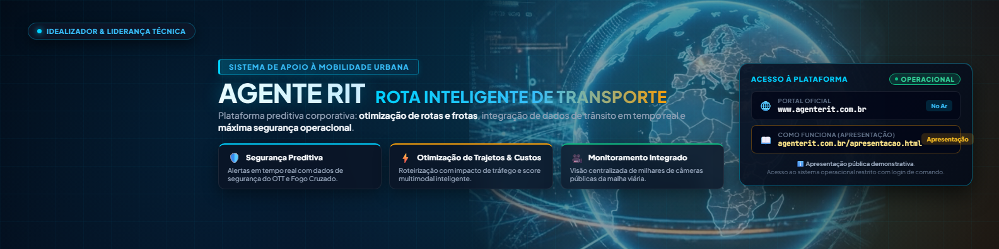
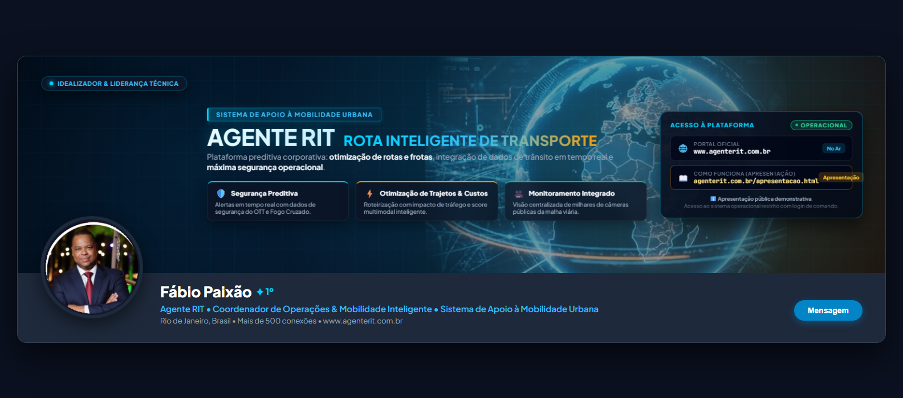

✓
Todas as alterações solicitadas foram aplicadas:
Versão refinada do Modelo 1 com foco em mobilidade urbana e inteligência de dados.
1. Imagem do Globo
Globo holográfico com anéis orbitais e telemetria integrado com iluminação e profundidade.
2. Mobilidade Urbana
Inserido o destaque oficial: "Sistema de Apoio à Mobilidade Urbana".
3. 100% em Português
Eliminados todos os termos em inglês (ex: No Ar, Apresentação, Liderança Técnica).
4. Limpeza de Boxes
Removidos "RJ+SP Conectado" e o box "Privacy by Design", dando mais espaço aos 3 pilares essenciais.
★ VERSÃO FINAL OFICIAL
Modelo 1 (V2 Atualizado) — Sistema de Apoio à Mobilidade Urbana
Com a imagem do globo, 3 cards de ganhos operacionais e links para o portal e apresentação institucional.



👁️ Simulação Realista com sua Foto no LinkedIn
Observe como a foto circular no canto inferior esquerdo não sobrepõe nenhum texto ou informação vital

📋 Como Carregar a Nova Imagem no seu Perfil do LinkedIn
- 1. Baixe o Arquivo Clique no botão azul "Baixar Retina 2x" acima para obter a máxima definição (3168×792 px).
- 2. Abra seu Perfil Acesse seu perfil no LinkedIn no computador.
- 3. Edite a Imagem de Fundo Clique no ícone de lápis/câmera localizado no canto superior direito do seu banner atual.
- 4. Aplique e Salve Selecione a imagem baixada e clique em "Aplicar". O enquadramento será automático e perfeito!